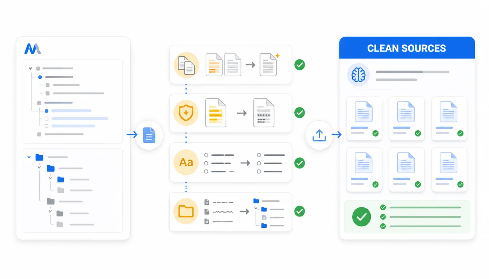

AI 知识库效果差，很多时候不是模型问题，而是资料源没有清洗。幕布导出的 Markdown、HTML、JSON 已经把笔记从平台里拿了出来，但在上传 Dify、Coze、NotebookLM 或企业内部 RAG 系统前，还需要做一轮去重、脱敏、改标题、补上下文和验收。
这篇不重复讲某个平台怎么上传，而是讲通用的“上传前整理”。如果你已经看过幕布接入 Dify、幕布接入 Coze或幕布导入 Gemini Notebook，这篇就是它们的前置清单。
快速答案：先导出 Markdown、HTML、JSON 三份；保留 raw 原始目录，复制一份 clean 上传目录；删除草稿和重复文件；脱敏个人和客户信息；统一标题、文件名和目录；给图片/表格补文字说明；最后用 5 到 10 个真实问题验证资料是否能被正确检索。

为什么“清洗”比“上传更多资料”更重要？
AI 知识库不是网盘。你上传什么，它就可能引用什么。幕布里常见的个人备忘、讨论草稿、旧版方案、临时会议记录，如果没有筛掉，就会进入模型的检索范围。
更麻烦的是，错误资料往往比缺资料更难发现。缺资料时模型可能说不知道；资料混乱时，它会找到一段看似相关但已经过期的内容，然后生成一段很顺的回答。
推荐目录：raw 留底，clean 上传
不要直接在原始导出目录里改文件。推荐这样组织：
MubuAIKnowledge/2026-07-21/
raw/
Markdown/
HTML/
JSON/
clean/
product-faq/
internal-sop/
research-notes/
review/
cleanup-log.md
sensitive-check.md
raw 是原始备份，任何时候都不改；clean 是准备上传的资料源；review 记录你删了什么、改了什么、为什么改。这样以后知识库回答异常，可以回到原始版本对照。
7 个上传前清洗动作
1. 先划定知识库边界
先问一句：这个知识库要回答谁的问题？客服、销售、研发、HR、个人研究，边界完全不同。不要把“所有幕布笔记”当成一个知识库。
| 知识库类型 | 可以进入 | 暂缓进入 |
|---|---|---|
| 客服 FAQ | 产品规则、常见问题、故障排查 | 内部争议、客户隐私、未发布功能 |
| 内部 SOP | 正式流程、检查清单、负责人说明 | 临时方案、旧流程、没有结论的讨论 |
| 个人研究 | 读书笔记、论文摘要、会议纪要 | 无关收藏、重复摘录、未标来源的片段 |
2. 删除重复和过期文件
幕布里很容易出现“方案 V1”“方案最终版”“方案最终最终版”。AI 不知道哪个才是准的。建议保留最终版，把旧版本放入 archive，默认不上传。
如果你必须保留历史版本，至少在文件名里标清状态：archived-2025-旧版退款规则.md。不要让过期资料和正式资料处在同一层级。
3. 处理敏感信息
上传前搜索这些内容：
- 手机号、邮箱、身份证、地址。
- 客户名、合同号、报价、付款信息。
- 账号、Token、API Key、内部后台链接。
- 员工绩效、面试评价、个人争议记录。
处理方式不只有删除，也可以替换成占位描述，例如“某客户”“内部系统”“具体报价需人工确认”。关键是不要让模型检索到原始敏感值。
4. 统一文件名和标题
AI 检索和人工维护都依赖标题。不要保留一堆 未命名.md、会议记录.md、新文档.md。
不推荐：
会议记录.md
方案.md
未命名.md
推荐：
2026-Q3-客服退款规则FAQ.md
2026-07-发布前检查清单.md
AI知识库-资料清洗流程.md
文件名最好包含主题、时间、状态。正文开头也可以加一段“资料说明”，让后续检索更容易理解上下文。
5. 把图片和表格变成文字
幕布导出的 Markdown 可能保留图片链接，但不要假设 AI 知识库一定会理解图片内容。关键流程图、截图、表格，最好补一段文字说明。
图片说明：
这张图展示退款处理流程，顺序是：
1. 用户提交申请
2. 客服核对订单状态
3. 财务确认退款路径
4. 运营记录原因标签
如果一个 SOP 的核心信息只在图片里，上传前一定要转成文字。
6. 保留 JSON，不直接上传 JSON
JSON 是很好的兜底备份，因为它更接近幕布原始节点结构。但普通问答知识库通常不应该直接检索未经处理的 JSON，结构字段可能干扰回答。
更好的做法是：Markdown 进入知识库，HTML 用来人工对照，JSON 留给以后重新转换。如果后续你发现分段不理想，可以从 JSON 重新生成更适合 RAG 的 Markdown。
7. 用样本问题做上传前验收
清洗完不要马上全量导入。先选 5 到 10 篇样本，准备问题集：
| 问题类型 | 示例 | 通过标准 |
|---|---|---|
| 事实查找 | 退款规则有哪些条件？ | 命中正式规则，不引用草稿 |
| 流程步骤 | 发布前检查顺序是什么？ | 步骤完整，顺序正确 |
| 权限边界 | 客户报价能否直接回答？ | 拒答或提示人工确认 |
| 无资料问题 | 问一个资料里不存在的问题 | 明确说明缺少依据 |
上传前最终清单
- 文档数量与幕布导出数量能对上。
- 每个文件名能看出主题、时间和状态。
- 过期文件已经移入 archive，不进入默认上传目录。
- 手机号、邮箱、合同、报价、密钥已经处理。
- 图片和表格有必要的文字说明。
- Markdown、HTML、JSON 三份都保留在本地。
- 样本问题能命中正确资料，不能回答的问题不会被编造。
常见问题
清洗资料是不是很花时间？
第一次会花一些时间，但比上线后排查错误回答更省。建议先从一个小知识库开始，例如客服 FAQ 或项目 SOP，跑通后再扩展。
可以用 AI 帮我清洗吗？
可以让 AI 辅助改标题、提取摘要、找重复，但敏感信息和权限边界需要人工确认。不要把未脱敏资料直接丢给不受控的外部工具。
清洗后还需要保留幕布原文档吗？
建议保留。至少在知识库验收完成前，不要删除幕布原文档和 raw 导出目录。清洗目录只是上传版本，不应该成为唯一备份。
总结：先让资料可信，再让 AI 检索
幕布导出工具解决的是资料可携带，资料清洗解决的是知识库可相信。AI 知识库不怕资料少，怕资料脏、过期、重复、边界不清。
如果你只记一个原则：上传前先保留 raw，再整理 clean。这样既能让知识库更干净，也能给未来回滚和重做转换留余地。
相关链接：